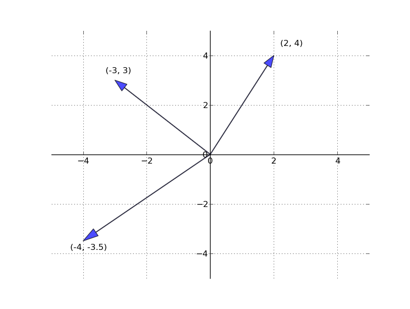
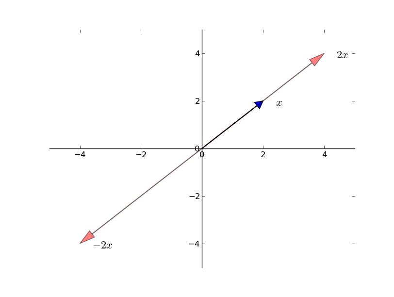
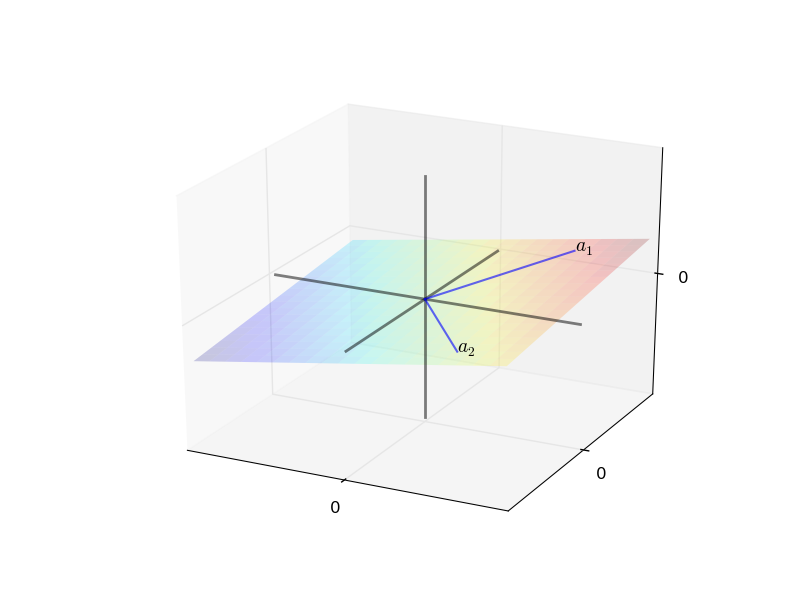
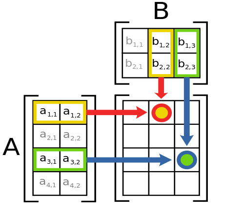

using LinearAlgebraLinear Algebra in Julia
1 Introduction
Linear algebra is one of the most commonly used branches of mathematics in economics. A remarkably wide range of applied problems—from solving supply-and-demand systems to estimating regression models to characterizing dynamic equilibria—ultimately reduce to operations on vectors and matrices. This set of notes introduces the core concepts of linear algebra and shows how to implement them in Julia using the LinearAlgebra standard library.
Consider a system of two linear equations:
\[ \begin{array}{c} y_1 = a x_1 + b x_2 \\ y_2 = c x_1 + d x_2 \end{array} \]
Or, more generally, a system of \(n\) equations in \(k\) unknowns:
\[ \begin{array}{c} y_1 = a_{11} x_1 + a_{12} x_2 + \cdots + a_{1k} x_k \\ \vdots \\ y_n = a_{n1} x_1 + a_{n2} x_2 + \cdots + a_{nk} x_k \end{array} \]
The objective is to solve for \(x_1, \ldots, x_k\) given the coefficients \(a_{ij}\) and the values \(y_1, \ldots, y_n\). Along the way, we will need to answer several important questions:
- Does a solution actually exist?
- Are there many solutions, and if so how should we interpret them?
- If no exact solution exists, is there a “best” approximate solution?
- If a solution exists, how should we compute it efficiently?
- What if the equations are nonlinear, as most equilibrium conditions in economics are?
These notes will show how to use Julia to answer each of these questions numerically. The last question turns out to lean on all the others: the standard method for solving nonlinear systems, Newton’s method, works by solving a sequence of linear systems.
2 Vectors
2.1 Definition
A vector of length \(n\) is simply a sequence of \(n\) numbers, which we write as a column:
\[ x = \left(\begin{matrix} x_1\\\vdots\\ x_n\end{matrix}\right) \]
The set of all \(n\)-vectors is denoted \(\mathbb{R}^n\). For example, \(\mathbb{R}^2\) is the plane, and a vector in \(\mathbb{R}^2\) is just a point on that plane.

2.2 Vectors in Julia
Julia is built with vectors and matrices as fundamental building blocks, making it a natural language for linear algebra. We begin by loading the LinearAlgebra standard library, which provides many of the functions we will use:
A simple vector can be created with square brackets:
x = [1., 2.]2-element Vector{Float64}:
1.0
2.0Julia provides several convenience functions for constructing common vectors:
x = zeros(3) # A vector in R^3 filled with zeros
println("x = $x")
y = ones(4) # A vector in R^4 filled with ones
println("y = $y")
z = collect(LinRange(0, 1, 6)) # 6 evenly spaced values between 0 and 1
println("z = $z")x = [0.0, 0.0, 0.0]
y = [1.0, 1.0, 1.0, 1.0]
z = [0.0, 0.2, 0.4, 0.6, 0.8, 1.0]The zeros and ones functions are especially common in numerical work. You will often initialize a vector of zeros and then fill in computed values, or use a vector of ones to construct a design matrix for regression (as we will see later in these notes).
2.2.1 Editing Vectors
Once a vector is created, you can edit individual elements using square-bracket indexing:
x[1] = 1
x3-element Vector{Float64}:
1.0
0.0
0.0You can also access multiple elements at once using slice notation:
println(x[2:3])[0.0, 0.0]2.2.2 Assigning to Slices
When assigning values to a slice of a vector, you must use .= (the “dot-equals” operator) rather than plain =. The dot tells Julia to perform the assignment element-wise:
x[2:3] = 3, 4 # This produces an errorArgumentError: indexed assignment with a single value to possibly many locations is not supported; perhaps use broadcasting `.=` instead? Stacktrace: [1] setindex_shape_check(::Tuple{Int64, Int64}, ::Int64) @ Base ./indices.jl:277 [2] _unsafe_setindex!(::IndexLinear, A::Vector{Float64}, x::Tuple{Int64, Int64}, I::UnitRange{Int64}) @ Base ./multidimensional.jl:1045 [3] _setindex! @ ./multidimensional.jl:1036 [inlined] [4] setindex!(A::Vector{Float64}, v::Tuple{Int64, Int64}, I::UnitRange{Int64}) @ Base ./abstractarray.jl:1464 [5] top-level scope @ ~/work/EC410-Source/EC410-Source/Linear Algebra/Linear Algebra Notes.qmd:117
x[2:3] .= 3, 4 # This works: assigns element-wise
x3-element Vector{Float64}:
1.0
3.0
4.0This is our first encounter with Julia’s dot syntax for element-wise operations, which we will see much more of below.
2.3 Vector Operations
2.3.1 Addition
When we add two vectors, we add them element by element:
\[ x + y = \left[ \begin{array}{c} x_1 \\ x_2 \\ \vdots \\ x_n \end{array} \right] + \left[ \begin{array}{c} y_1 \\ y_2 \\ \vdots \\ y_n \end{array} \right] := \left[ \begin{array}{c} x_1 + y_1 \\ x_2 + y_2 \\ \vdots \\ x_n + y_n \end{array} \right] \]
Both vectors must have the same length for addition to be defined.
x = ones(3)
y = [2, 4, 6]
x + y3-element Vector{Float64}:
3.0
5.0
7.02.3.2 Scalar Multiplication
Scalar multiplication takes a scalar (a single number) \(\gamma\) and a vector \(x\), and multiplies every element by \(\gamma\):
\[ \gamma x := \left[ \begin{array}{c} \gamma x_1 \\ \gamma x_2 \\ \vdots \\ \gamma x_n \end{array} \right] \]
4*x3-element Vector{Float64}:
4.0
4.0
4.0Geometrically, scalar multiplication stretches or shrinks a vector (and flips its direction if \(\gamma < 0\)). Together with addition, these two operations define the structure of a vector space.

2.3.3 Element-wise Multiplication
In addition to scalar multiplication, we can multiply two vectors element by element using the .* operator:
println(x, y)
xy = x .* y[1.0, 1.0, 1.0][2, 4, 6]3-element Vector{Float64}:
2.0
4.0
6.0
TipThe Dot Operator
In Julia, prefixing any operator with . applies it element-wise. This works with any function or operator: .+, .-, .*, ./, .^, and even f.(x) for any function f. This is called broadcasting and is a useful feature for numerical computing.
2.3.4 Inner Products and Norms
The inner product (or dot product) of two vectors \(x, y \in \mathbb{R}^n\) is defined as:
\[ x' y := \sum_{i=1}^n x_i y_i \]
The inner product measures how “aligned” two vectors are. Two vectors are orthogonal (perpendicular) if their inner product is zero.
The norm of a vector \(x\) represents its “length” or magnitude:
\[ \| x \| := \sqrt{x' x} := \left( \sum_{i=1}^n x_i^2 \right)^{1/2} \]
This is the Euclidean distance from the origin to the point \(x\). Norms are important in optimization and statistics—for example, least-squares regression works by minimizing the norm of a residual vector.
# Two ways to compute the inner product
println(sum(x .* y)) # Manual: element-wise multiply, then sum
println(dot(x, y)) # Built-in function from LinearAlgebra12.0
12.0# Two ways to compute the norm
println(sqrt(dot(x, x))) # Manual: sqrt of inner product with itself
println(norm(x)) # Built-in function1.7320508075688772
1.7320508075688772# An example of orthogonal vectors
z = [-1., 2., -1]
println(dot(x, z)) # Zero: x and z are orthogonal0.03 Spanning and Linear Independence
3.1 Linear Combinations and Span
Given a set of vectors \(A = \{a_1, \ldots, a_k\} \subset \mathbb{R}^n\), a natural question is: what new vectors can we create by combining these using addition and scalar multiplication? A vector \(y \in \mathbb{R}^n\) is a linear combination of \(A\) if there exist scalars \(\beta_1, \ldots, \beta_k\) such that:
\[ y = \beta_1 a_1 + \beta_2 a_2 + \ldots + \beta_k a_k \]
The set of all vectors that can be expressed as linear combinations of \(A\) is called the span of \(A\).

The concept of span tells us what part of \(\mathbb{R}^n\) is “reachable” from a given set of vectors.
3.1.1 Examples
If \(A\) contains only a single vector \(a_1 \in \mathbb{R}^n\), then its span is the line through \(a_1\) and the origin—all scalar multiples \(\beta a_1\).
A more important example is the canonical basis for \(\mathbb{R}^n\). These are the \(n\) vectors:
\[ e_1 = \left[\begin{matrix}1\\0\\\vdots\\0\end{matrix}\right],\quad e_2 = \left[\begin{matrix}0\\1\\\vdots\\0\end{matrix}\right],\quad\ldots,\quad e_n = \left[\begin{matrix}0\\0\\\vdots\\1\end{matrix}\right] \]
The span of \(\{e_1, e_2, \ldots, e_n\}\) is all of \(\mathbb{R}^n\), because for any vector \(x \in \mathbb{R}^n\) we can write:
\[ x = x_1 e_1 + x_2 e_2 + \ldots + x_n e_n \]
That is, any vector is a linear combination of the canonical basis vectors, with the components of \(x\) serving as the coefficients.
3.1.2 A Counterexample
Not every collection of \(n\) vectors spans \(\mathbb{R}^n\). Consider \(A_0 = \{e_1, e_2, e_1 + e_2\} \subset \mathbb{R}^3\). If \(y = (y_1, y_2, y_3)\) is a linear combination of these vectors, then the third component must satisfy \(y_3 = 0\). So \(A_0\) fails to span all of \(\mathbb{R}^3\)—it only reaches the plane where the third coordinate is zero.
ImportantKey Insight
Adding more vectors to a set does not always increase the span. The new vector must point in a “genuinely new direction”—one that is not already reachable as a linear combination of the existing vectors.
3.2 Linear Independence
The counterexample above motivates the concept of linear independence. A set of vectors \(A = \{a_1, \ldots, a_k\} \subset \mathbb{R}^n\) is linearly dependent if some strict subset of \(A\) has the same span as \(A\) itself. Equivalently, at least one vector in the set can be written as a linear combination of the others—it is “redundant.” The set \(A\) is linearly independent if no such redundancy exists.
There are several equivalent ways to define linear independence:
- No vector in \(A\) can be formed as a linear combination of the others.
- The only solution to \(\beta_1 a_1 + \ldots + \beta_k a_k = 0\) is \(\beta_1 = \cdots = \beta_k = 0\).
An important consequence: since \(\mathbb{R}^n\) can be spanned by \(n\) vectors (the canonical basis), any set of more than \(n\) vectors in \(\mathbb{R}^n\) must be linearly dependent. There simply is not “room” for more than \(n\) independent directions.
3.2.1 Unique Representations
A key property of linearly independent vectors is that they provide unique representations of every vector in their span. Suppose \(A = \{a_1, \ldots, a_k\}\) is linearly independent and some vector \(y\) can be written as:
\[ y = \beta_1 a_1 + \ldots + \beta_k a_k = \gamma_1 a_1 + \ldots + \gamma_k a_k \]
Subtracting one expression from the other gives:
\[ (\beta_1 - \gamma_1) a_1 + \cdots + (\beta_k - \gamma_k) a_k = 0 \]
By linear independence, the only way this sum can equal zero is if every coefficient is zero, which means \(\gamma_i = \beta_i\) for all \(i\). In other words, the representation is unique.
This property is essential in regression analysis: when we write \(y = X\beta + \varepsilon\) and the columns of \(X\) are linearly independent, there is a unique coefficient vector \(\beta\) that provides the best linear fit.
4 Matrices
4.1 Definition and Basic Properties
An \(n \times k\) matrix is a rectangular array of numbers with \(n\) rows and \(k\) columns:
\[ A = \left[ \begin{array}{cccc} a_{11} & a_{12} & \cdots & a_{1k} \\ a_{21} & a_{22} & \cdots & a_{2k} \\ \vdots & \vdots & & \vdots \\ a_{n1} & a_{n2} & \cdots & a_{nk} \end{array} \right] \]
We can also view \(A\) as a collection of \(k\) column vectors in \(\mathbb{R}^n\):
\[ A = \left[\begin{matrix}a_1 & a_2 & \cdots & a_k\end{matrix}\right] \quad\text{where}\quad a_i = \left[\begin{matrix} a_{1i}\\ a_{2i} \\\vdots \\ a_{ni}\end{matrix}\right] \]
This “columns as vectors” perspective turns out to be extremely useful. It connects matrices to the concepts of span and linear independence we just discussed: the column space of \(A\) is exactly the span of its column vectors.
Some terminology:
- A matrix with \(n = 1\) is a row vector; a matrix with \(k = 1\) is a column vector.
- A matrix with \(n = k\) is square.
- The transpose \(A'\) (also written \(A^T\)) is formed by swapping rows and columns: the element at position \((i,j)\) in \(A\) moves to position \((j,i)\) in \(A'\).
\[ A = \left[ \begin{array}{cccc} a_{11} & a_{12} & \cdots & a_{1k} \\ \vdots & \vdots & & \vdots \\ a_{n1} & a_{n2} & \cdots & a_{nk} \end{array} \right] \quad A' = \left[ \begin{array}{cccc} a_{11} & a_{21} & \cdots & a_{n1} \\ \vdots & \vdots & & \vdots \\ a_{1k} & a_{2k} & \cdots & a_{nk} \end{array} \right] \]
If \(A\) is \(n \times k\), then \(A'\) is \(k \times n\).
4.1.1 Matrices and Transpose in Julia
In Julia, matrices are created by separating elements with spaces (within a row) and semicolons (between rows):
A = [1 2 3;
4 5 6]2×3 Matrix{Int64}:
1 2 3
4 5 6The transpose is written naturally with an apostrophe:
A'3×2 adjoint(::Matrix{Int64}) with eltype Int64:
1 4
2 5
3 64.2 Special Matrices
Several kinds of matrices come up so often that they have special names.
4.2.1 Symmetric Matrices
A square matrix is symmetric if \(A = A'\)—that is, \(a_{ij} = a_{ji}\) for all \(i\) and \(j\). Symmetric matrices arise naturally in economics: variance-covariance matrices and Hessian matrices (second derivatives) of utility or profit functions are both symmetric.
A = [1 2; 2 1]2×2 Matrix{Int64}:
1 2
2 1A' # Same as A2×2 adjoint(::Matrix{Int64}) with eltype Int64:
1 2
2 14.2.2 Diagonal Matrices
A matrix is diagonal if the only nonzero entries lie on the principal diagonal (positions where the row index equals the column index: \(a_{11}, a_{22}, \ldots\)). The diag function extracts the diagonal of a matrix, and diagm constructs a diagonal matrix:
A = [1 2;
3 4]2×2 Matrix{Int64}:
1 2
3 4diag(A) # Extract the diagonal elements2-element Vector{Int64}:
1
4diagm(0 => [1, 2, 3]) # Create a 3×3 diagonal matrix3×3 Matrix{Int64}:
1 0 0
0 2 0
0 0 3The 0 => syntax specifies which diagonal to place the values on. The main diagonal is 0; 1 is one above, -1 is one below:
diagm(1 => [1, 2, 3]) # Values on the first super-diagonal4×4 Matrix{Int64}:
0 1 0 0
0 0 2 0
0 0 0 3
0 0 0 04.2.3 The Identity Matrix
The most important diagonal matrix is the identity matrix \(I\), which has ones on the diagonal and zeros everywhere else:
diagm(0 => ones(3))3×3 Matrix{Float64}:
1.0 0.0 0.0
0.0 1.0 0.0
0.0 0.0 1.0The identity matrix can also be written in terms of the canonical basis vectors:
\[ I = \left[\begin{matrix}e_1 & e_2 & \cdots & e_n\end{matrix}\right] \]
Its key property—that it acts as the “multiplicative identity” for matrices, i.e. 1 for matrices—will become clear once we define matrix multiplication below.
4.3 Matrix Operations
4.3.1 Addition and Scalar Multiplication
Matrix addition and scalar multiplication work exactly as you would expect from vectors—element by element. For addition, both matrices must have the same dimensions (\(n \times k\)). For scalar multiplication, every element is multiplied by the scalar \(\gamma\):
\[ \gamma A := \left[ \begin{array}{ccc} \gamma a_{11} & \cdots & \gamma a_{1k} \\ \vdots & & \vdots \\ \gamma a_{n1} & \cdots & \gamma a_{nk} \end{array} \right] \]
A = [1 2; 3 4]
B = diagm(0 => ones(2))
2*A2×2 Matrix{Int64}:
2 4
6 8A + B2×2 Matrix{Float64}:
2.0 2.0
3.0 5.04.3.2 Matrix Multiplication
Matrix multiplication is the central operation of linear algebra, and it is not element-wise. The \((i, j)\)-th element of the product \(AB\) is the inner product of row \(i\) of \(A\) with column \(j\) of \(B\):

For the product \(AB\) to be defined, \(A\) must be \(n \times k\) and \(B\) must be \(k \times m\) (the “inner dimensions” must match). The result is an \(n \times m\) matrix.
An important fact: in general, \(AB \neq BA\). Matrix multiplication is not commutative. (This is analogous to why Julia uses * for string concatenation—both are non-commutative operations.)
4.3.3 Matrix-Vector Multiplication
A special case of matrix multiplication arises when we multiply an \(n \times k\) matrix \(A\) by a \(k \times 1\) vector \(x\), producing an \(n \times 1\) vector:
\[ Ax = \left[ \begin{array}{c} a_{11} x_1 + \cdots + a_{1k} x_k \\ \vdots \\ a_{n1} x_1 + \cdots + a_{nk} x_k \end{array} \right] \]
There is a beautiful alternative way to read this. If \(a_1, \ldots, a_k\) are the columns of \(A\), then:
\[ Ax = x_1 a_1 + x_2 a_2 + \ldots + x_k a_k \]
In other words, \(Ax\) is a linear combination of the columns of \(A\), with the entries of \(x\) as weights. This means \(Ax\) always lies in the span (or column space) of \(A\). This perspective is the key to understanding when systems of equations have solutions.
We can now state the defining property of the identity matrix: \(IA = A = AI\) for any conformable matrix \(A\). The identity matrix is the matrix equivalent of multiplying by 1.
4.3.4 Matrix Multiplication in Julia
In Julia, matrix multiplication uses the * operator:
A = [1 2; 3 4]2×2 Matrix{Int64}:
1 2
3 4I2 = diagm(0 => ones(2))2×2 Matrix{Float64}:
1.0 0.0
0.0 1.0A * I2 # Multiplying by the identity returns A2×2 Matrix{Float64}:
1.0 2.0
3.0 4.04.3.5 Element-wise vs. Matrix Multiplication
It is crucial to distinguish between matrix multiplication (*) and element-wise multiplication (.*):
A .* I2 # Element-wise: very different from A * I22×2 Matrix{Float64}:
1.0 0.0
0.0 4.0Julia also provides a built-in identity matrix object I that automatically conforms to the correct size:
A * I # No need to construct an explicit identity matrix2×2 Matrix{Int64}:
1 2
3 44.4 Broadcasting
Broadcasting is Julia’s mechanism for applying operations across arrays of different shapes. It replicates smaller arrays to match the dimensions of larger ones, all without actually creating copies in memory. The syntax uses the dot prefix (.).
A = diagm(0 => ones(2))2×2 Matrix{Float64}:
1.0 0.0
0.0 1.0b = [1, 2]2-element Vector{Int64}:
1
2A .+ b # Adds b to each column of A2×2 Matrix{Float64}:
2.0 1.0
2.0 3.0Broadcasting follows a simple set of rules. Julia compares array shapes element-wise, starting from the trailing (rightmost) dimensions. Two dimensions are compatible when:
- They are equal, or
- One of them has length 1.
For example, consider arrays with the following shapes:
A (4d array): 8 × 1 × 6 × 1
B (3d array): 7 × 1 × 5
Result (4d array): 8 × 7 × 6 × 5These are compatible because each pair of dimensions either matches or one is 1. But the following pair is not compatible:
A (2d array): 2 × 1
B (3d array): 8 × 4 × 3The second dimensions (2 and 4) are neither equal nor 1, so broadcasting fails. Understanding these rules will save you from cryptic dimension-mismatch errors.
5 Solving Systems of Equations
5.1 Matrix Formulation
With vectors and matrices in hand, we can now express our original system of equations compactly. The system:
\[ \begin{array}{c} y_1 = a_{11} x_1 + a_{12} x_2 + \cdots + a_{1k} x_k \\ \vdots \\ y_n = a_{n1} x_1 + a_{n2} x_2 + \cdots + a_{nk} x_k \end{array} \]
can be written as a single matrix equation: \(y = Ax\).
Since \(Ax = x_1 a_1 + \ldots + x_k a_k\) is a linear combination of the columns of \(A\), the equation \(y = Ax\) has a solution only if \(y\) lies in the span (column space) of \(A\). If the columns of \(A\) are linearly independent and span all of \(\mathbb{R}^n\), then a unique solution exists for every \(y\). In this case we say \(A\) has full column rank.
The nature of the solution depends on the shape of \(A\):
- Square case (\(n = k\), full rank): exactly one solution.
- Over-determined (\(n > k\)): more equations than unknowns; typically no exact solution, but a best approximation exists.
- Under-determined (\(n < k\)): fewer equations than unknowns; infinitely many solutions.
Let us examine each case.
5.2 The Regular (Square) Case
When \(A\) is \(n \times n\) with linearly independent columns, the equation \(y = Ax\) has a solution for every \(y \in \mathbb{R}^n\), and this solution is unique. Define \(g(y)\) as the function that maps each \(y\) to its solution: \(y = Ag(y)\).
This function \(g\) turns out to be linear:
\[ g(\alpha w + \beta z) = \alpha g(w) + \beta g(z) \]
Since any linear function from \(\mathbb{R}^n\) to \(\mathbb{R}^n\) can be represented by a matrix, there exists a matrix \(A^{-1}\) such that \(g(y) = A^{-1} y\). This matrix is called the inverse of \(A\), and it satisfies:
\[ I = A^{-1}A = A A^{-1} \]
To solve \(y = Ax\), we simply pre-multiply both sides by \(A^{-1}\):
\[ A^{-1} y = A^{-1} A x = Ix = x \]
ImportantKey Result
When \(A\) is square and invertible, the solution to \(y = Ax\) is \(x = A^{-1}y\).
Not every square matrix has an inverse. The determinant provides a test: if \(\det(A) \neq 0\), then \(A\) is invertible (its columns are linearly independent). If \(\det(A) = 0\), the columns are linearly dependent, and no inverse exists.
5.2.1 Solving in Julia: The Inverse
A = [1 2; 3 4]
y = ones(2)
det(A) # Check that det(A) ≠ 0-2.0A_inv = inv(A)2×2 Matrix{Float64}:
-2.0 1.0
1.5 -0.5x = A_inv * y2-element Vector{Float64}:
-0.9999999999999998
0.9999999999999999A * x # Verify: should return y2-element Vector{Float64}:
1.0
1.00000000000000045.2.2 Solving in Julia: The Backslash Operator
Julia provides the backslash operator \ as a more efficient and numerically stable way to solve \(Ax = y\):
x = A \ y2-element Vector{Float64}:
-1.0
1.0
TipBest Practice
Prefer A \ y over inv(A) * y for solving systems. The backslash operator is more numerically stable (less sensitive to rounding errors) and more efficient (it avoids explicitly computing the inverse, which is an expensive operation). Computing the full inverse and then multiplying is rarely necessary in practice.
5.3 Over-determined Systems
When \(A\) is \(n \times k\) with \(n > k\)—more equations than unknowns—the system is over-determined. This is the case that arises in least-squares regression: we have more data points than parameters, and we want to find the parameter vector that provides the best fit.
In general, an arbitrary \(y \in \mathbb{R}^n\) will not lie in the span of \(A\) (which is at most \(k\)-dimensional in an \(n\)-dimensional space), so no exact solution exists. Instead, we look for the \(x\) that minimizes the distance between \(y\) and \(Ax\):
\[ \hat{x} = \arg\min_x \| y - Ax \| \]
When \(A\) has full column rank, the solution is given by the normal equations:
\[ \hat{x} = (A'A)^{-1}A'y \]
This is precisely the OLS (Ordinary Least Squares) estimator from econometrics. The matrix \((A'A)^{-1}A'\) is called the pseudo-inverse of \(A\), and Julia provides it via the pinv function.
5.3.1 Example: Fitting a Line
Suppose we want to fit a line \(y = mx + c\) through some noisy data:
x = [0, 1, 2, 3]
y = [-1, 0.2, 0.9, 2.1]4-element Vector{Float64}:
-1.0
0.2
0.9
2.1We rewrite this as a matrix equation \(y = Ap\) where \(A = [x \;\; \mathbf{1}]\) is the design matrix and \(p = [m \;\; c]'\) is the parameter vector:
A = [x ones(length(x))]4×2 Matrix{Float64}:
0.0 1.0
1.0 1.0
2.0 1.0
3.0 1.0The least-squares solution is:
m, c = pinv(A) * y
print(m, c)0.9999999999999998-0.9499999999999997We can verify this matches the normal equations formula \((A'A)^{-1}A'y\):
(A' * A) \ A' * y2-element Vector{Float64}:
0.9999999999999998
-0.94999999999999975.3.2 Plotting the Fit
using Plotsscatter(x, y, label="Original data", markersize=10)
plot!(x, m*x .+ c, color=:red, label="Fitted line")![]()
This is the essence of linear regression: find the line (or hyperplane) that minimizes the sum of squared residuals. The tools we have built up—vectors, matrices, inner products, norms, and the pseudo-inverse—provide both the mathematical foundation and the computational machinery.
5.4 Under-determined Systems
When \(A\) is \(n \times k\) with \(n < k\)—fewer equations than unknowns—the system is under-determined. In this case, we expect either no solutions (if \(y\) is not in the column space of \(A\)) or infinitely many solutions.
To understand why there are infinitely many solutions, consider the kernel (or null space) of \(A\): the set of all vectors \(\hat{x}\) such that \(A\hat{x} = 0\). If \(x\) is any solution to \(y = Ax\) and \(\hat{x}\) is in the kernel, then \(x + \hat{x}\) is also a solution:
\[ A(x + \hat{x}) = Ax + A\hat{x} = y + 0 = y \]
So we can add any kernel element to a known solution and get another valid solution. When the system is under-determined, the kernel is nontrivial (it contains nonzero vectors), giving us infinitely many solutions.
WarningCaution
Under-determined systems have infinitely many solutions. Methods like pinv return the minimum-norm solution—the solution with the smallest \(\|x\|\). Depending on the problem, this may or may not be the most economically meaningful solution. In structural estimation, additional restrictions (theory, moment conditions, etc.) are typically imposed to pin down a unique solution.
6 Economics Applications
The linear algebra tools we have developed—systems of equations, matrix inverses, and least squares—are not merely abstract mathematics. They are the computational backbone of much of applied economics. In this section, we work through two applications that illustrate how linear algebra appears in different branches of the field: input-output analysis (macroeconomics and trade) and OLS regression (econometrics)
6.1 Input-Output Model (Leontief)
6.1.1 Setup
In 1973, Wassily Leontief won the Nobel Prize in Economics for developing input-output analysis, a framework for studying the interdependencies between industries in an economy. The key idea is simple: to produce steel, you need coal and iron ore; to produce cars, you need steel, rubber, and glass; and the coal industry itself needs some steel (for mining equipment). Every industry is both a producer and a consumer of other industries’ output.
Consider an economy with \(n\) industries. Let \(a_{ij}\) denote the amount of good \(i\) required to produce one unit of good \(j\). These coefficients form the \(n \times n\) input-output matrix (or technology matrix) \(A\). Let \(x\) be the \(n \times 1\) vector of gross output (total production of each industry) and let \(d\) be the \(n \times 1\) vector of final demand (the output consumed by households, government, or exported—everything that is not used as an intermediate input).
The total output of each industry must satisfy two demands: intermediate demand from other industries (\(Ax\)) and final demand from consumers (\(d\)):
\[ x = Ax + d \]
Reading this equation column by column: the \(j\)-th column of \(Ax\) tells you how much of each good is needed as an input to produce \(x_j\) units of good \(j\). Summing across all industries and adding final demand gives the total demand for each good, which must equal total supply.
6.1.2 The Leontief Inverse
Rearranging the equation to solve for gross output:
\[ x - Ax = d \quad \Longrightarrow \quad (I - A)x = d \quad \Longrightarrow \quad x = (I - A)^{-1} d \]
The matrix \((I - A)^{-1}\) is called the Leontief inverse. It is one of the most important objects in input-output economics. The element in row \(i\), column \(j\) of \((I - A)^{-1}\) tells you the total amount of good \(i\) needed—both directly and indirectly through the entire supply chain—to deliver one additional unit of good \(j\) to final consumers.
Why “indirectly”? Suppose final demand for cars increases by one unit. The car industry needs more steel (a direct effect). But producing that extra steel requires more coal, and producing that extra coal requires more steel, and so on. The Leontief inverse captures this entire cascade of indirect effects, summing up the infinite chain of input requirements.
Mathematically, \((I - A)^{-1} = I + A + A^2 + A^3 + \cdots\) when the series converges. The term \(A^k\) captures the \(k\)-th round of indirect effects. The direct effect is \(I\) (one unit of the good itself), the first round of inputs is \(A\), the inputs needed to produce those inputs is \(A^2\), and so on.
ImportantWhen Does the Leontief Inverse Exist?
The system has a non-negative solution for any non-negative demand vector \(d\) if and only if \((I - A)\) is invertible and \((I - A)^{-1}\) has all non-negative entries. A simple sufficient condition is that every column of \(A\) sums to less than 1. When the coefficients are measured in dollars, column \(j\)’s sum is the cost of all the inputs sector \(j\) buys to produce one dollar of output, so the condition says each industry uses less than a dollar of inputs to make a dollar of output: the economy is productive. Each round of indirect requirements is then smaller than the round before, \(A^k\) shrinks toward zero, and the series \(I + A + A^2 + \cdots\) converges to \((I - A)^{-1}\). Because every term in the series is non-negative, so is the Leontief inverse. If industries instead needed more than a dollar of inputs per dollar of output, the economy could not sustain itself: it would consume more than it produces.
6.1.3 A Three-Sector Example
Let us build a concrete example with three sectors: Agriculture (sector 1), Manufacturing (sector 2), and Services (sector 3).
# Input-output matrix: a_ij = amount of good i needed per unit of good j
# Columns: Agriculture, Manufacturing, Services
A_io = [0.10 0.20 0.05; # Agriculture inputs
0.15 0.10 0.10; # Manufacturing inputs
0.05 0.15 0.10] # Services inputs3×3 Matrix{Float64}:
0.1 0.2 0.05
0.15 0.1 0.1
0.05 0.15 0.1The first column tells us that producing one unit of agricultural output requires 0.10 units of agriculture itself (seeds, animal feed), 0.15 units of manufacturing (tractors, fertilizer), and 0.05 units of services (transportation, finance). The second column says that manufacturing requires 0.20 units of agriculture (cotton, food for workers), 0.10 of its own output, and 0.15 units of services. And so on.
First, let us verify that the economy is productive by checking the column sums:
col_sums = sum(A_io, dims=1) # Inputs used per unit of output, by sector
println("Column sums: $col_sums")
println("All column sums < 1: $(all(col_sums .< 1))")Column sums: [0.3 0.45000000000000007 0.25]
All column sums < 1: trueEvery sector uses well under one unit of inputs per unit of output, so the Leontief inverse exists and is non-negative. Let us compute it and confirm both claims: that it has no negative entries, and that it really is the limit of the series \(I + A + A^2 + \cdots\). The expression sum(A_io^k for k in 0:K) adds up the first \(K + 1\) terms of the series (recall A_io^0 is the identity matrix):
leontief_inv = inv(I - A_io)
round.(leontief_inv, digits=4)3×3 Matrix{Float64}:
1.1621 0.2741 0.095
0.2046 1.1803 0.1425
0.0987 0.2119 1.1401println("All entries non-negative: $(all(leontief_inv .>= 0))")
for K in [1, 2, 5, 10, 20]
partial_sum = sum(A_io^k for k in 0:K) # I + A + A² + ... + Aᴷ
gap = maximum(abs.(partial_sum - leontief_inv))
println("K = $K: largest gap from (I - A)⁻¹ = $gap")
endAll entries non-negative: true
K = 1: largest gap from (I - A)⁻¹ = 0.08033985017357925
K = 2: largest gap from (I - A)⁻¹ = 0.026572720628540075
K = 5: largest gap from (I - A)⁻¹ = 0.001008658128540063
K = 10: largest gap from (I - A)⁻¹ = 4.423210376025555e-6
K = 20: largest gap from (I - A)⁻¹ = 8.501721548981322e-11The partial sums close in on the Leontief inverse quickly: each extra round of indirect effects matters less than the one before, and after about 20 rounds the remaining effects are negligible.
Now suppose final demand is \(d = (100, 200, 150)'\) (i.e. households want 100 units of agricultural goods, 200 units of manufactured goods, and 150 units of services). What gross output does each industry need to produce? This is a linear system, \((I - A)x = d\), so we solve it with the backslash operator:
# Gross output required
d = [100.0, 200.0, 150.0] # Final demand
x = (I - A_io) \ d
println("Final demand: $d")
println("Gross output: $(round.(x, digits=2))")
println("Intermediate: $(round.(x .- d, digits=2))")Final demand: [100.0, 200.0, 150.0]
Gross output: [185.27, 277.91, 223.28]
Intermediate: [85.27, 77.91, 73.28]Notice that gross output exceeds final demand for every sector. The difference \(x - d\) is the intermediate demand: the output that gets used up as inputs by other industries. Manufacturing, for example, must produce considerably more than the 200 units consumers want, because agriculture and services also need manufactured goods as inputs.
We can also ask: what happens if final demand for manufacturing increases by 50 units?
d_new = [100.0, 250.0, 150.0] # Manufacturing demand up by 50
x_new = leontief_inv * d_new
println("Change in gross output: $(round.(x_new .- x, digits=2))")Change in gross output: [13.7, 59.02, 10.6]The change in gross output is exactly the second column of the Leontief inverse, scaled by 50. Every sector must increase production, not just manufacturing: this is the multiplier effect of input-output analysis.
6.2 OLS Regression
6.2.1 The Normal Equations
Ordinary Least Squares (OLS) is perhaps the most widely used statistical method in economics. We encountered the least-squares formula earlier when discussing over-determined systems. Here we develop the implementation more carefully, emphasizing the connection to the linear algebra tools we have built.
The regression model is \(y = X\beta + \varepsilon\), where \(y\) is an \(n \times 1\) vector of outcomes, \(X\) is an \(n \times k\) matrix of regressors (including a column of ones for the intercept), \(\beta\) is a \(k \times 1\) vector of coefficients, and \(\varepsilon\) is an \(n \times 1\) vector of errors. The OLS estimator minimizes the sum of squared residuals:
\[ \hat{\beta} = \arg\min_\beta \|y - X\beta\|^2 = (X'X)^{-1}X'y \]
6.2.2 Implementation
Let us generate simulated data with known true coefficients and verify that OLS recovers them:
using Random
Random.seed!(123) #This ensures the same random numbers are generated each time the code is run
n = 200 # Number of observations
β_true = [2.0, -1.5, 0.8] # True coefficients: intercept, x₁, x₂
σ_ε = 1.0 # Standard deviation of errors
# Generate regressors
X_raw = randn(n, 2) # Two explanatory variables
X = hcat(ones(n), X_raw) # Add intercept column
ε = σ_ε * randn(n) # Error terms
y = X * β_true + ε # Observed outcomes
println("True β: $β_true")True β: [2.0, -1.5, 0.8]Now we estimate \(\hat{\beta}\) using both the explicit normal equations formula and the numerically superior backslash operator:
# Method 1: Normal equations (explicit formula)
β_hat_normal = inv(X' * X) * X' * y
# Method 2: Backslash operator (numerically stable)
β_hat_backslash = X \ y
println("β̂ (normal equations): $(round.(β_hat_normal, digits=4))")
println("β̂ (backslash): $(round.(β_hat_backslash, digits=4))")
println("True β: $β_true")β̂ (normal equations): [2.065, -1.5256, 0.8382]
β̂ (backslash): [2.065, -1.5256, 0.8382]
True β: [2.0, -1.5, 0.8]Both methods give the same answer (to many decimal places), but the backslash approach is preferred. To see why, consider what happens when the columns of \(X\) are nearly collinear. The matrix \(X'X\) becomes nearly singular, and inverting it amplifies rounding errors dramatically. The backslash operator uses a QR decomposition internally, which avoids forming \(X'X\) entirely and is therefore much more robust.
6.2.3 Standard Errors
To conduct inference, we need the standard errors of \(\hat{\beta}\). Under the classical assumptions (\(\varepsilon \sim N(0, \sigma_\varepsilon^2 I)\)), the variance-covariance matrix of \(\hat{\beta}\) is:
\[ \text{Var}(\hat{\beta}) = \hat{\sigma}^2 (X'X)^{-1} \]
where \(\hat{\sigma}^2 = \frac{1}{n - k} \|y - X\hat{\beta}\|^2\) is the estimated error variance (using the degrees-of-freedom correction \(n - k\)). The standard errors are the square roots of the diagonal elements.
k = size(X, 2) # Number of regressors
residuals = y - X * β_hat_backslash # Residual vector
σ̂² = dot(residuals, residuals) / (n - k) # Estimated error variance
var_β = σ̂² * inv(X' * X) # Variance-covariance matrix
se_β = sqrt.(diag(var_β)) # Standard errors
println("Estimated coefficients and standard errors:")
for i in 1:k
println(" β̂_$i = $(round(β_hat_backslash[i], digits=4)) ± $(round(se_β[i], digits=4))")
end
println("\nEstimated σ² = $(round(σ̂², digits=4)) (true σ² = $(σ_ε^2))")Estimated coefficients and standard errors:
β̂_1 = 2.065 ± 0.0698
β̂_2 = -1.5256 ± 0.0716
β̂_3 = 0.8382 ± 0.0671
Estimated σ² = 0.9675 (true σ² = 1.0)Notice how the variance-covariance matrix \(\hat{\sigma}^2 (X'X)^{-1}\) combines two ideas from our linear algebra toolkit: the inverse of \(X'X\) (which captures how “spread out” the regressors are—more variation means more precise estimates) and the estimated noise level \(\hat{\sigma}^2\).
TipWhy Not Just Use a Package?
In practice, you would use a package like GLM.jl for regression analysis. The point of implementing OLS by hand is to see that the entire procedure—estimation, residuals, standard errors—is nothing but linear algebra: matrix multiplication, the inverse, and the dot product. Understanding the mechanics makes you a better consumer of regression output.
7 Nonlinear Systems of Equations
Everything so far has been linear: the unknowns enter the equations only multiplied by constants and added together. For linear systems we have a complete theory—check that \(\det(A) \neq 0\), then compute A \ y—and an exact answer in one line. Most equilibrium conditions in economics, however, are nonlinear. Constant-elasticity demand curves, Cobb-Douglas production functions, and first-order conditions with diminishing returns all involve powers, products, and ratios of the unknowns.
The general problem is to find a vector \(x \in \mathbb{R}^n\) such that
\[ f(x) = 0, \qquad f: \mathbb{R}^n \to \mathbb{R}^n, \]
that is, \(n\) equations in \(n\) unknowns. A linear system is the special case \(f(x) = Ax - y\). For a general nonlinear \(f\) there is no formula analogous to \(x = A^{-1}y\), so we turn to iterative methods: start from a guess and improve it step by step until the equations hold to within a small tolerance. The most important such method, Newton’s method, improves the guess by solving a linear system at every step. Everything we have learned about linear systems is therefore the engine inside nonlinear solvers.
7.1 Example: Two-Market Equilibrium
Consider two goods that are substitutes. Demand and supply have constant elasticities:
\[ D_1 = 100\, p_1^{-2} p_2^{0.5}, \quad S_1 = 20\, p_1^{1.5}, \qquad D_2 = 80\, p_2^{-1.5} p_1^{0.3}, \quad S_2 = 15\, p_2^{2}. \]
Demand for each good falls with its own price and rises with the price of the other good (the positive exponent on the other price), while supply rises with the good’s own price. An equilibrium is a price vector \(p = (p_1, p_2)\) at which excess demand \(f(p) = D(p) - S(p)\) is zero in both markets simultaneously. Because the prices enter through powers and products, we cannot write this system as \(Ap = y\).
In Julia, we write excess demand as a function that takes the price vector and returns the vector of excess demands:
function excess_demand(p)
p₁, p₂ = p # unpack the price vector
return [100p₁^-2 * p₂^0.5 - 20p₁^1.5, # market 1: D₁ - S₁
80p₂^-1.5 * p₁^0.3 - 15p₂^2] # market 2: D₂ - S₂
end
excess_demand([2.0, 2.0])2-element Vector{Float64}:
-21.213203435596427
-25.177977468155035At \(p = (2, 2)\) both entries are negative: supply exceeds demand in both markets, so these prices are too high. We need a systematic way to find the prices that clear both markets at once.
7.2 Newton’s Method
7.2.1 The Idea in One Dimension
Start with a single equation \(f(x) = 0\) and a guess \(x_n\). Near \(x_n\), the function is well approximated by its tangent line, \(f(x) \approx f(x_n) + f'(x_n)(x - x_n)\). The tangent line is easy to solve: it crosses zero at
\[ x_{n+1} = x_n - \frac{f(x_n)}{f'(x_n)}. \]
Newton’s method takes \(x_{n+1}\) as the new guess and repeats. The figure shows one step for \(f(x) = x^2 - 2\), whose positive root is \(\sqrt{2} \approx 1.414\), starting from \(x_0 = 2.5\):
f_1d(x) = x^2 - 2
f_1d′(x) = 2x
x₀ = 2.5
x₁ = x₀ - f_1d(x₀) / f_1d′(x₀) # one Newton step
xs = range(0, 3, length=200)
plot(xs, f_1d.(xs), label="f(x) = x² - 2", linewidth=2)
plot!(xs, f_1d(x₀) .+ f_1d′(x₀) .* (xs .- x₀), label="tangent line at x₀", linestyle=:dash)
hline!([0], color=:black, label="")
scatter!([x₀, x₁], [f_1d(x₀), 0], label="x₀ and x₁", markersize=6)![]()
The tangent line at \(x_0 = 2.5\) hits zero at \(x_1 = 1.65\), much closer to \(\sqrt{2}\) than where we started. Repeating from \(x_1\) would get closer still.
7.2.2 Systems: Linearize, Then Solve
With \(n\) equations, the tangent line becomes a first-order Taylor approximation around the current guess \(x_n\):
\[ f(x) \approx f(x_n) + J(x_n)\,(x - x_n), \]
where \(J(x_n)\) is the Jacobian of \(f\): the \(n \times n\) matrix of partial derivatives whose \((i, j)\) element is \(J_{ij} = \partial f_i / \partial x_j\). Row \(i\) of the Jacobian tells us how equation \(i\) responds to each of the unknowns. Setting the linear approximation to zero and writing \(\Delta = x_{n+1} - x_n\) for the step gives
\[ J(x_n)\, \Delta = -f(x_n), \qquad x_{n+1} = x_n + \Delta. \]
ImportantEach Newton Step Is a Linear System
The equation \(J(x_n)\Delta = -f(x_n)\) is exactly the problem \(Ax = y\) from earlier in these notes, with \(A = J(x_n)\) and \(y = -f(x_n)\). A unique step exists when the Jacobian is invertible, \(\det J(x_n) \neq 0\), and we compute it with the backslash operator: Δ = J(x) \ (-f(x)). Following the best practice from above, we never form \(J^{-1}\) explicitly.
7.2.3 The Jacobian of the Two-Market Example
Differentiating each excess demand with respect to each price (using the power rule) gives
\[ J(p) = \begin{bmatrix} \dfrac{\partial f_1}{\partial p_1} & \dfrac{\partial f_1}{\partial p_2} \\[1em] \dfrac{\partial f_2}{\partial p_1} & \dfrac{\partial f_2}{\partial p_2} \end{bmatrix} = \begin{bmatrix} -200\, p_1^{-3} p_2^{0.5} - 30\, p_1^{0.5} & 50\, p_1^{-2} p_2^{-0.5} \\ 24\, p_1^{-0.7} p_2^{-1.5} & -120\, p_1^{0.3} p_2^{-2.5} - 30\, p_2 \end{bmatrix}. \]
The diagonal entries are own-price effects: raising \(p_1\) lowers demand and raises supply of good 1, so excess demand falls. The off-diagonal entries are cross-price effects, which are positive because the goods are substitutes.
function jacobian(p)
p₁, p₂ = p
J₁₁ = -200p₁^-3 * p₂^0.5 - 30p₁^0.5 # ∂f₁/∂p₁ (own price)
J₁₂ = 50p₁^-2 * p₂^-0.5 # ∂f₁/∂p₂ (cross price)
J₂₁ = 24p₁^-0.7 * p₂^-1.5 # ∂f₂/∂p₁ (cross price)
J₂₂ = -120p₁^0.3 * p₂^-2.5 - 30p₂ # ∂f₂/∂p₂ (own price)
return [J₁₁ J₁₂;
J₂₁ J₂₂]
end
jacobian([2.0, 2.0])2×2 Matrix{Float64}:
-77.7817 8.83883
5.2233 -86.11657.2.4 Checking the Jacobian with Finite Differences
It is easy to make an algebra mistake when deriving a Jacobian by hand, and a wrong Jacobian can make Newton’s method fail in confusing ways. A good habit is to check it numerically. Column \(j\) of the Jacobian measures how \(f\) responds to a small change in \(x_j\) alone, so we can approximate it with a finite difference: nudge \(x\) in the direction of the canonical basis vector \(e_j\) and see how much \(f\) changes,
\[ J_{\cdot j}(x) \approx \frac{f(x + h e_j) - f(x)}{h} \]
for a small number \(h\). Building the matrix one column at a time:
function fd_jacobian(f, x; h = 1e-6)
n = length(x)
J = zeros(n, n)
fx = f(x)
for j in 1:n
eⱼ = zeros(n)
eⱼ[j] = 1.0 # canonical basis vector e_j
J[:, j] = (f(x + h * eⱼ) - fx) / h # column j: response to x_j
end
return J
end
J_fd = fd_jacobian(excess_demand, [2.0, 2.0])
println("Largest gap from the analytic Jacobian: $(maximum(abs.(J_fd - jacobian([2.0, 2.0]))))")
J_fdLargest gap from the analytic Jacobian: 2.1203687140314287e-52×2 Matrix{Float64}:
-77.7817 8.83883
5.2233 -86.1165The finite-difference Jacobian matches the analytic one above to about six significant digits; a discrepancy of this size is what we expect from a finite difference with \(h = 10^{-6}\). Our hand-derived Jacobian is correct. (fd_jacobian could also replace the analytic Jacobian inside Newton’s method when the derivatives are too tedious to work out.)
7.2.5 One Newton Step
Starting from the guess \(p = (2, 2)\), a single Newton step solves one \(2 \times 2\) linear system:
p = [2.0, 2.0] # initial guess
Δ = jacobian(p) \ (-excess_demand(p)) # solve J(p) Δ = -f(p)
p_new = p + Δ # take the step
println("New guess: $p_new")
println("‖f(p)‖ = $(norm(excess_demand(p)))")
println("‖f(p_new)‖ = $(norm(excess_demand(p_new)))")New guess: [1.6919253416011006, 1.6889430060896855]
‖f(p)‖ = 32.92310054334073
‖f(p_new)‖ = 1.3883008911248673The step lowers both prices (as it should, since both markets had excess supply), and the size of the excess demand vector falls from about 33 to about 1.4. One linear solve did most of the work. To finish the job, we repeat.
7.2.6 The Newton Loop
Newton’s method simply repeats the step until the steps become negligibly small:
function newton(f, J, x₀; tol = 1e-10, maxiter = 50)
x = x₀
for n in 1:maxiter
Δ = J(x) \ (-f(x)) # linearize, then solve
x = x + Δ # take the step
println("iteration $n: ‖f(x)‖ = $(norm(f(x)))")
if norm(Δ) < tol # converged: steps are tiny
return x
end
end
println("Warning: no convergence after $maxiter iterations")
return x
endnewton (generic function with 1 method)The function takes the system f and its Jacobian J as arguments. Because functions are values in Julia, the same newton works for any system for which we can supply \(f\) and \(J\). The keyword arguments tol and maxiter control when to stop: we declare convergence once the step is smaller than tol, and give up (with a warning) after maxiter iterations.
p_star = newton(excess_demand, jacobian, [2.0, 2.0])iteration 1: ‖f(x)‖ = 1.3883008911248673
iteration 2: ‖f(x)‖ = 0.009203787568081082
iteration 3: ‖f(x)‖ = 4.049338246528834e-7
iteration 4: ‖f(x)‖ = 0.0
iteration 5: ‖f(x)‖ = 0.02-element Vector{Float64}:
1.7069573735223966
1.6889575066262879The equilibrium prices are \(p_1^* \approx 1.707\) and \(p_2^* \approx 1.689\). We can confirm that both markets clear and compute the equilibrium quantities:
println("Excess demand at p*: $(excess_demand(p_star))")
p₁, p₂ = p_star
println("Market 1: D = $(100p₁^-2 * p₂^0.5), S = $(20p₁^1.5)")
println("Market 2: D = $(80p₂^-1.5 * p₁^0.3), S = $(15p₂^2)")Excess demand at p*: [0.0, 0.0]
Market 1: D = 44.60299376027331, S = 44.60299376027331
Market 2: D = 42.78866188783931, S = 42.788661887839317.2.7 Quadratic Convergence
Look at how fast the size of excess demand falls: roughly \(1.4 \to 0.009 \to 4 \times 10^{-7} \to 0\) (zero to machine precision). Near the solution, each Newton step roughly squares the error, so the number of correct digits approximately doubles with every iteration. This is called quadratic convergence, and it is why Newton’s method is the foundation of most nonlinear solvers. The catch is the phrase “near the solution”: far from a root, the linear approximation can be poor (see the cautions below).
7.2.8 Linear Systems Converge in One Step
What happens if we apply Newton’s method to a system that is already linear, \(f(x) = Ax - y\)? The Jacobian is then \(J = A\) everywhere, so the first step is
\[ x_1 = x_0 - A^{-1}(Ax_0 - y) = A^{-1}y, \]
the exact solution, no matter where we start. Newton’s method generalizes A \ y: it replaces a nonlinear system by the linear system that best approximates it, and when the system is linear to begin with, the approximation is exact. We can check this with a linear version of the two-market model, in which excess demands are \(f_1 = 9 - 3p_1 + p_2\) and \(f_2 = 8 + p_1 - 4p_2\):
B = [3.0 -1.0;
-1.0 4.0]
b = [9.0, 8.0]
excess_linear(p) = b - B * p # linear excess demand
jacobian_linear(p) = -B # constant Jacobian
newton(excess_linear, jacobian_linear, [100.0, -50.0])iteration 1: ‖f(x)‖ = 2.929642751054232e-14
iteration 2: ‖f(x)‖ = 0.02-element Vector{Float64}:
4.0
3.0Even from the absurd starting guess \((100, -50)\), the first step lands on the solution \(p = (4, 3)\), which is the same answer as B \ b. The second iteration takes a (numerically) zero step and the loop stops.
7.3 Using solve from the EC410 Package
Writing Newton’s method by hand shows what is going on inside a nonlinear solver, but in practice you should use a well-tested implementation. The course package EC410 provides solve(f, x0), which takes a function that returns a vector and an initial guess, and returns the root:
using EC410
p_solve = solve(excess_demand, [2.0, 2.0])2-element Vector{Float64}:
1.7069573735223966
1.6889575066262879p_solve ≈ p_star # same answer as our hand-written Newton looptrueWe did not have to supply a Jacobian: the solver computes the derivatives itself. Under the hood it takes Newton-type steps, each one solving a linear system just like ours, but it adds safeguards (such as shortening a step that would overshoot) that make it more robust when the initial guess is poor. If the solver fails to converge, solve prints a warning.
For a single equation in a single unknown, EC410 also provides solve1D(f, a, b), which searches for a root between a and b (where f(a) and f(b) must have opposite signs), and solve1D(f, x0), which starts from a guess:
solve1D(x -> x^2 - 2, 0.0, 3.0) # the root √2 from the one-dimensional example1.414213562373095If your function also takes parameters, say excess(p, params), pass them through an anonymous function (a closure): solve(p -> excess(p, params), [2.0, 2.0]) hands solve a function of the prices alone.
7.4 Cautions: Initial Guesses, Multiple Solutions, and Singular Jacobians
Newton’s method is fast when it works, but it comes with no guarantees. Three things can go wrong.
Multiple solutions. A nonlinear system can have more than one solution, and the one a solver finds depends on where it starts. Consider the toy system
\[ x_1^2 + x_2^2 = 4, \qquad x_2 = x_1^2 - 1. \]
The first equation is a circle of radius 2 and the second is a parabola. Each solution of the system is a point where the two curves cross:
θ = range(0, 2π, length=200)
plot(2cos.(θ), 2sin.(θ), label="x₁² + x₂² = 4", aspect_ratio=:equal, linewidth=2)
x1s = range(-2.2, 2.2, length=200)
plot!(x1s, x1s.^2 .- 1, label="x₂ = x₁² - 1", linewidth=2)
xlims!(-2.5, 2.5); ylims!(-2.5, 2.5)![]()
The curves cross twice, at \(x_1 \approx \pm 1.517\). Which solution solve returns depends on the initial guess:
g(x) = [x[1]^2 + x[2]^2 - 4, # circle of radius 2
x[2] - x[1]^2 + 1] # parabola
println("Starting from ( 1, 1): $(solve(g, [1.0, 1.0]))")
println("Starting from (-1, 1): $(solve(g, [-1.0, 1.0]))")Starting from ( 1, 1): [1.5174899135519797, 1.3027756377319946]
Starting from (-1, 1): [-1.5174899135519797, 1.3027756377319946]In economics, multiple solutions can be mathematical artifacts (for example, a root with negative prices or quantities) or genuine multiple equilibria (for example, in models with coordination or network effects). Either way, you should know which one you found and why.
Singular Jacobians. Each Newton step requires solving \(J(x_n)\Delta = -f(x_n)\), which has a unique solution only if \(\det J(x_n) \neq 0\). For the toy system,
\[ J(x) = \begin{bmatrix} 2x_1 & 2x_2 \\ -2x_1 & 1 \end{bmatrix}, \qquad \det J(x) = 2x_1(1 + 2x_2), \]
which is zero whenever \(x_1 = 0\). Starting from \((0, 1)\), the very first Newton step is undefined: the tangent planes give no information about which way to move \(x_1\) (by symmetry, it could go either way). solve gets stuck and warns us:
x_bad = solve(g, [0.0, 1.0])
g(x_bad)┌ Warning: solve did not converge (retcode = Stalled). Try a different initial guess or bracket. └ @ EC410 ~/work/EC410-Source/EC410-Source/EC410/src/EC410.jl:29
2-element Vector{Float64}:
-2.2370072061139856
2.3277773886785447The returned “solution” does not satisfy the equations. Always check the warnings and the residual \(f(x^*)\).
Overshooting. Even when the Jacobian is invertible, a nearly singular Jacobian produces an enormous step. Starting our hand-written newton just off the line \(x_1 = 0\) where the Jacobian is singular, at \((0.01, 1)\):
Jg(x) = [ 2x[1] 2x[2];
-2x[1] 1.0 ]
x_start = [0.01, 1.0]
println("First step: Δ = $(Jg(x_start) \ (-g(x_start)))")
newton(g, Jg, x_start)First step: Δ = [116.66166666666666, 0.3333333333333334]
iteration 1: ‖f(x)‖ = 19247.446619413517
iteration 2: ‖f(x)‖ = 4811.039269602775
iteration 3: ‖f(x)‖ = 1201.946141739974
iteration 4: ‖f(x)‖ = 299.6745812470617
iteration 5: ‖f(x)‖ = 74.11324361953463
iteration 6: ‖f(x)‖ = 17.748425771436494
iteration 7: ‖f(x)‖ = 3.7491785629840244
iteration 8: ‖f(x)‖ = 0.5015968813874843
iteration 9: ‖f(x)‖ = 0.016736638087186072
iteration 10: ‖f(x)‖ = 2.1393586285344844e-5
iteration 11: ‖f(x)‖ = 3.5134901003442045e-11
iteration 12: ‖f(x)‖ = 0.02-element Vector{Float64}:
1.5174899135519797
1.3027756377319948The first step throws \(x_1\) out to about 117, and \(\|f\|\) jumps from about 3.6 to over 19,000. The method then needs eight slow iterations, each roughly halving \(x_1\), before it is close enough to the root for quadratic convergence to kick in. Here it recovers, but in other problems an overshoot can land somewhere the function is not even defined (a negative price raised to a fractional power, say), and the method fails.
WarningPractical Checklist for Nonlinear Solvers
- Choose an initial guess that makes economic sense (positive prices, quantities of the right magnitude).
- After solving, verify that \(f(x^*) \approx 0\) and read any warnings.
- Try several initial guesses. If they lead to different answers, the system has multiple solutions and you need to think about which one is economically relevant.
- Check that the answer makes economic sense.
8 Summary
These notes covered the essential linear algebra concepts needed for computational economics:
Vectors are ordered sequences of numbers that live in \(\mathbb{R}^n\). We can add them, scale them, compute their inner products, and measure their lengths with norms.
Spanning and linear independence tell us about the structure of vector spaces. The span of a set of vectors is the set of all their linear combinations. Linearly independent vectors provide unique representations—a property essential for regression and identification.
Matrices generalize vectors to two dimensions. They represent linear transformations and systems of equations. Key operations include transpose, addition, scalar multiplication, and matrix multiplication (which is not element-wise and not commutative).
Solving systems depends on the shape of the matrix:
- Square, invertible (\(n = k\)): unique solution via \(x = A^{-1}y\) or
A \ y. - Over-determined (\(n > k\)): least-squares solution via \(\hat{x} = (A'A)^{-1}A'y\) or
pinv(A) * y. - Under-determined (\(n < k\)): infinitely many solutions;
pinvreturns the minimum-norm solution.
Economics applications tie these tools together. The Leontief input-output model uses matrix inversion to trace supply-chain interdependencies. OLS regression is a least-squares problem solved by the normal equations.
Nonlinear systems \(f(x) = 0\) have no closed-form solution, but Newton’s method reduces them to a sequence of linear systems: linearize \(f\) around the current guess using the Jacobian, solve \(J(x_n)\Delta = -f(x_n)\) with \, and repeat. Near a solution it converges quadratically. In practice we use solve(f, x0) from the EC410 package, and we always check the residual, read warnings, and try several initial guesses, because nonlinear systems can have multiple solutions or trap the solver at a singular Jacobian.
TipKey Julia Tools
| Function | Purpose |
|---|---|
dot(x, y) |
Inner product |
norm(x) |
Vector norm |
det(A) |
Determinant |
inv(A) |
Matrix inverse |
A \ y |
Solve \(Ax = y\) (preferred) |
pinv(A) |
Pseudo-inverse (for least-squares) |
J \ (-f) |
One Newton step: solve \(J\Delta = -f\) |
solve(f, x0) |
Solve a nonlinear system \(f(x) = 0\) (from EC410) |
solve1D(f, a, b) |
Solve one nonlinear equation on \([a, b]\) (from EC410) |
isposdef(A) |
Check positive definiteness |
diag(A), diagm(...) |
Extract/create diagonal matrices |
.*, .+, etc. |
Element-wise (broadcast) operations |